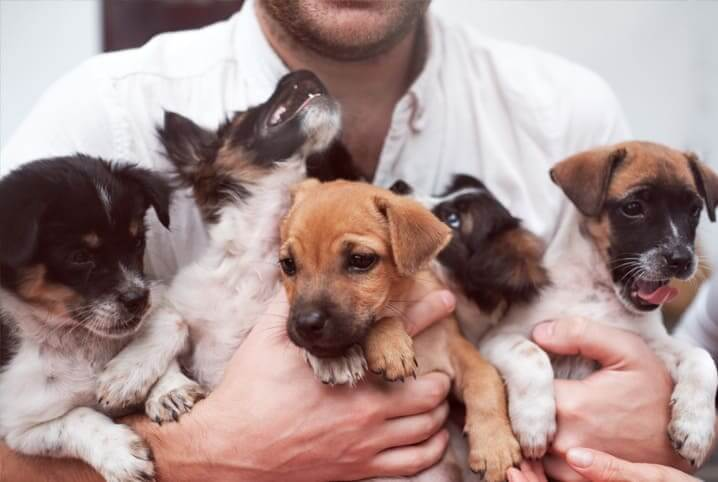

Bem-vindo à Amigo Animal
Nossa missão é transformar vidas através da adoção e apoio comunitário.
Nossa História
Fundada em 2010, nossa organização já impactou não só a vida de milhares de pessoas na comunidade local, como também na de centenas de animais desabrigados, focando sempre na transparência e no poder do voluntariado.
Informações de Contato
Fale conosco e saiba como ajudar:
- Email: contato@amigoanimal.com.br
- Telefone: (21) 99999-8888